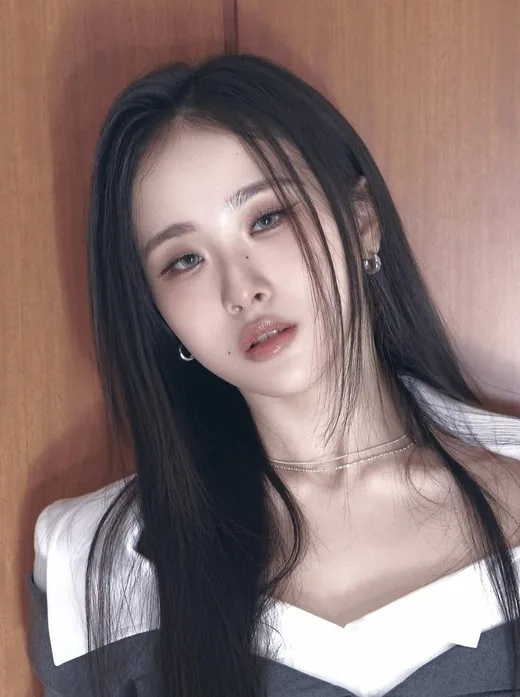
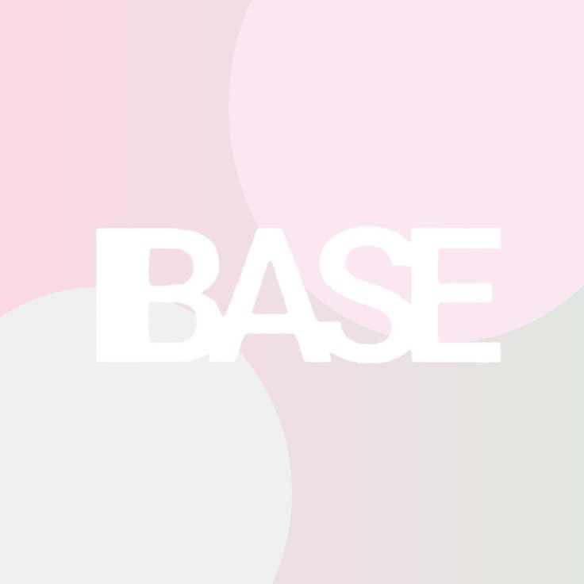
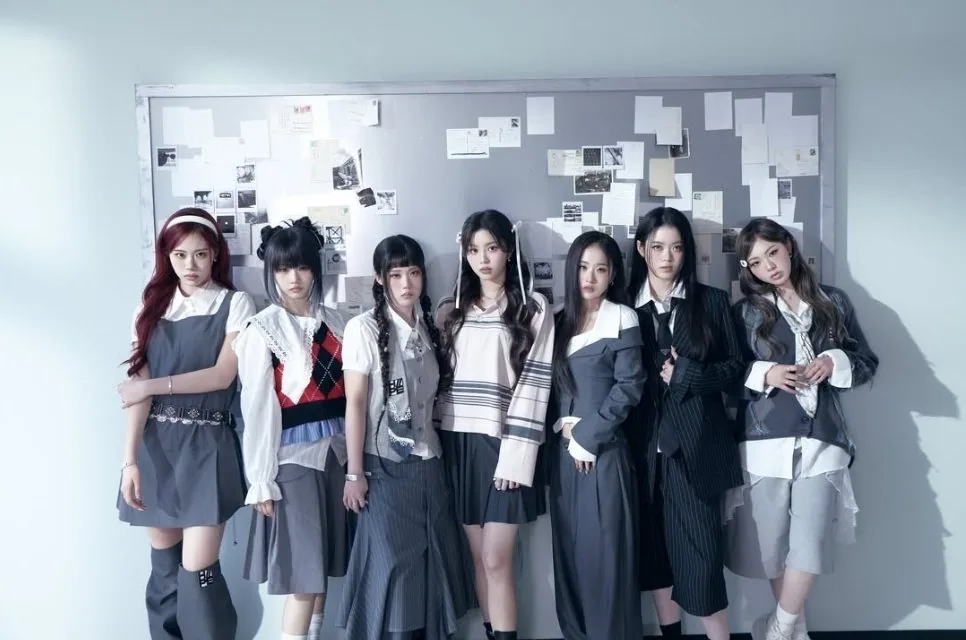
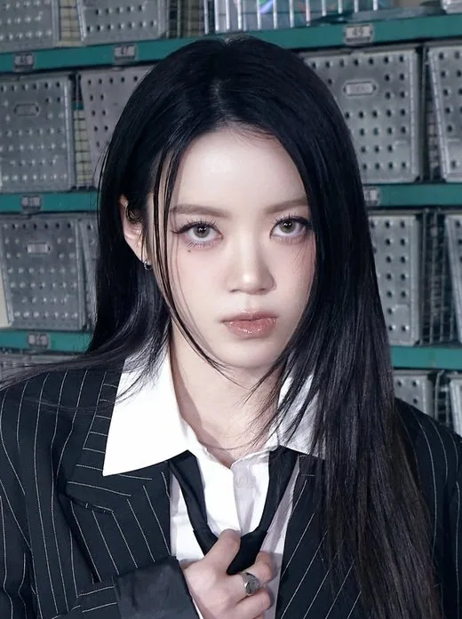
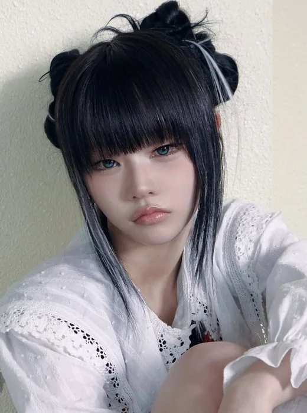
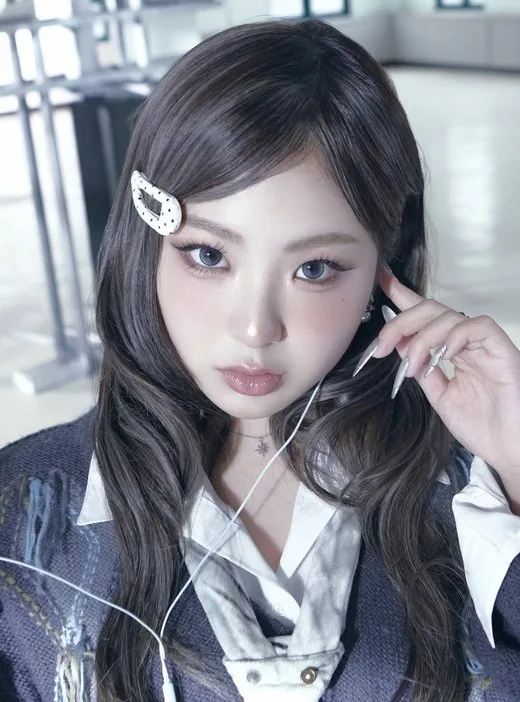
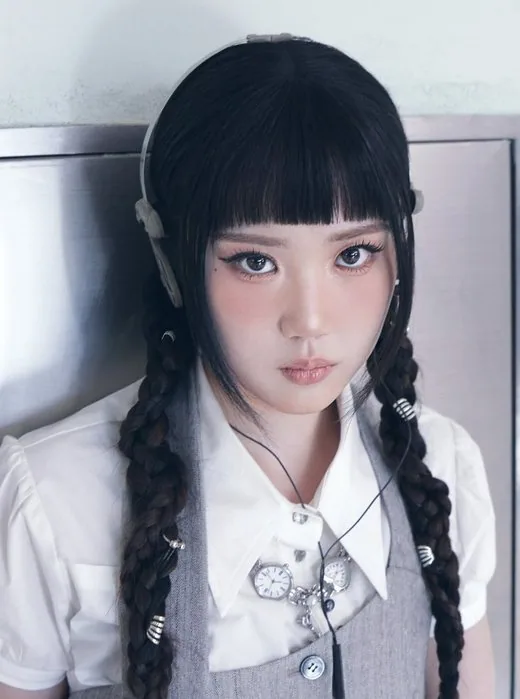
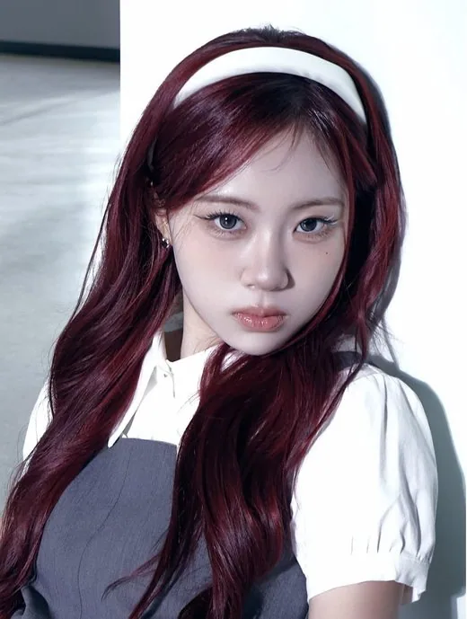

YSY
YSY (ユン・ソヨン) · Leader (4e de la survie) · Coréenne

IBASE Asian Pop
K-POP
Découvre H//PE Princess et les profils de ses membres sur IBASE Asian Pop.
Ouvrir la fiche interactiveHistoire : H//PE Princess (하입 프린세스, aussi écrit HIIPE Princess ou H//PE P) est un girl group coréano-japonais de 7 membres, le premier groupe signé chez Chapter-I, label commun de CJ ENM et Hakuhodo. Il est né de l'émission de survie Unpretty Rapstar: HIP POP Princess (4e saison de la série), dont la finale a eu lieu le 18 décembre 2025 : le classement a désigné Yuju (1re), Coco (2e), Niko (3e), YSY (4e), Doi (5e), Rino (6e) et Sujin (7e). Le groupe compte 3 Coréennes (YSY, Doi, Sujin), 3 Japonaises (Coco, Rino, Niko) et Yuju, d'origine coréenne et japonaise. Son premier mini-album « 17.7 » (nom tiré de l'âge moyen des membres) sort le 27 mai 2026, avec le titre « Stolen » (clip dévoilé le 29 avril 2026). Sources : KProfiles, Wikipédia, Kpopping.
Débuts : 27 mai 2026 (mini-album « 17.7 »)
Agence : Chapter-I (CJ ENM x Hakuhodo), géré par Amoeba Culture, en partenariat avec Warner Music

YSY (ユン・ソヨン) · Leader (4e de la survie) · Coréenne

Coco (코코 / ココ) · Main Dancer, Lead Rapper (2e de la survie) · Japonaise
Yuju (유주 / ユジュ) · Membre (1re de la survie) · Coréenne-Japonaise

Doi (도이 / ドイ) · Membre (5e de la survie) · Coréenne

Rino (리노 / リノ) · Membre (6e de la survie) · Japonaise

Niko (니코 / ニコ) · Membre (3e de la survie) · Japonaise

Sujin (수진 / スジン) · Maknae (7e de la survie) · Coréenne